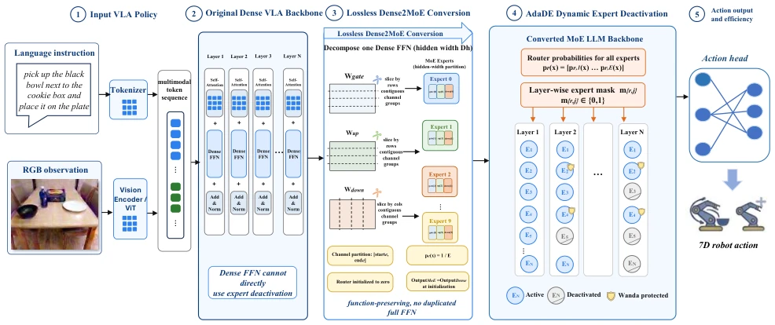
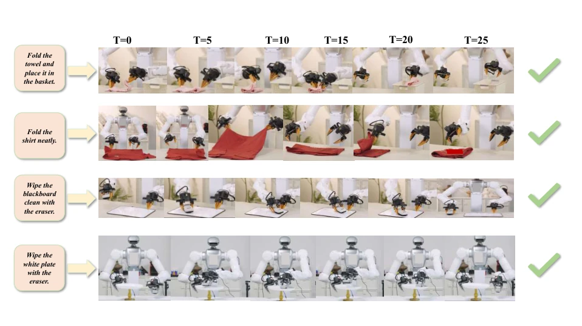

This paper performs a "slimming surgery" on bloated VLA models, forcibly embedding Dense FFNs into the MoE framework and dynamically deactivating unused experts. The idea is quite bold, given that VLA parameters are exploding and it is a fact that robots cannot handle them. The Dense2MoE conversion preserving functionality is clever, saving the trouble of recovery training. But the result is somewhat "Schrödinger's acceleration," inference latency actually increased because routing overhead is too large; it seems saving parameters without saving compute is futile. Additionally, only cutting the LLM, while ViT collapses upon contact, indicates the visual part is the true core; this operation has a suspicion of "picking up sesame but losing watermelon". However, maintaining LIBERO 95% success rate under 40% parameter reduction indeed points a clear path for edge deployment, though the hyperparameter tuning is headache-inducing, and actual implementation still depends on hardware optimization.
As the parameter count of VLA strategies surges, deployment on resource-constrained robot platforms becomes difficult [3, 39, 13]. Existing structured pruning methods reduce models by physically removing layers or channels, but this alters the pre-trained network's functionality, leading to output errors, typically requiring additional fine-tuning or compensation to recover performance [22, 32, 31, 1]. Directly applying existing sparsification methods to VLA strategies is also difficult, as most VLA models are based on Dense Transformers and cannot utilize the MoE conditional computation mechanism. Furthermore, simple Dense-to-MoE replacement would disrupt pre-trained strategy behavior. This paper aims to address how to reduce the parameter count on the LLM side of deployed strategies while maintaining task performance, specifically targeting the high redundancy of LLM-side FFN blocks. Preliminary experiments indicate that ViT and action generation modules are more sensitive to compression, while the language backbone has higher redundancy, providing a basis for targeted compression.

Fig. 2: Overview of the Dense2MoE to AdaDE pipeline. Starting from a dense VLA backbone, Dense2MoE converts selected blocks into MoE layers while preserving the initial dense behavior. AdaDE then trains the policy in three stages: warmup, dynamic expert deactivation, and final freeze. Warmup stabilizes routing and determines the protected set based on Wanda. The dynamic stage updates each layer mask using EMA smoothed routing scores, subject to a deactivation threshold, an update budget, and a minimum active constraint. The learned masks are fixed in the final stage and reused at inference.
The overall process is divided into two stages: Dense2MoE conversion and AdaDE dynamic expert deactivation. First, Dense2MoE reparameterizes selected Dense FFN blocks into MoE layers by dividing the intermediate hidden dimensions into continuous channel slices as experts, rather than copying the complete FFN. The Router is initialized to zero, ensuring all experts have the same initial probability, thereby maintaining functional equivalence during the initial conversion phase without requiring an additional recovery stage. Next, AdaDE performs adaptive expert deactivation during strategy fine-tuning. Training is divided into three stages: the Warmup stage stabilizes routing and determines the protection set based on Wanda; the Dynamic Deactivation stage utilizes EMA-smoothed routing statistics to update the expert retention mask for each layer, constrained by the deactivation threshold, update budget, and minimum activated expert count; the final Freeze stage fixes the mask. Core innovations include: 1) Function-preserving Dense2MoE conversion, avoiding abrupt behavior changes; 2) EMA-based expert importance estimation, allowing adaptive sparsity across different layers; 3) Auxiliary routing regularization, preventing the probability of the weakest expert from collapsing too early; 4) Wanda protection for important experts, avoiding structural importance being ignored.

Fig. 4: Qualitative rollouts on the real robot for representative manipulation tasks. Each row shows a sequence of execution snapshots from the initial observation to task completion.
Evaluated on LIBERO and RobotWin2.0 simulation benchmarks as well as real robot tasks. Compared with the original Dense VLA and fixed pruning strategies, under 40% LLM parameter deactivation, AdaDE maintains an average success rate of 95.1% on LIBERO and 42.0% on RobotWin2.0. The average success rate on real robot tasks is 61.4%. Compared with LLM-Pruner and FLAP, AdaDE maintains performance without an additional SFT recovery stage. Ablation experiments indicate that dynamic deactivation outperforms fixed expert removal, Wanda protection is crucial for stability, and excessively high update frequencies can disrupt optimization. Furthermore, experts on the LLM side show much higher tolerance to deactivation than those on the ViT side, validating the targeted nature of the compression strategy. Peak memory also decreases with parameter reduction, but inference latency does not decrease.